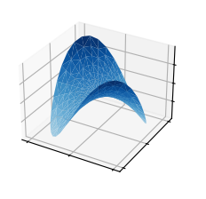

Overloading in key languages
| Language | Mojo | Python | C++ |
|---|---|---|---|
| Overloading | ✓ | ✓ |
Example Graphviz Diagram
Example Procedural Diagram
Code
import matplotlib.pyplot as plt
from matplotlib import cm
import numpy as np
plt.style.use('_mpl-gallery')
n_radii = 8
n_angles = 36
# Make radii and angles spaces
radii = np.linspace(0.125, 1.0, n_radii)
angles = np.linspace(0, 2*np.pi, n_angles, endpoint=False)[..., np.newaxis]
# Convert polar (radii, angles) coords to cartesian (x, y) coords.
x = np.append(0, (radii*np.cos(angles)).flatten())
y = np.append(0, (radii*np.sin(angles)).flatten())
z = np.sin(-x*y)
# Plot
fig, ax = plt.subplots(subplot_kw={'projection': '3d'})
ax.plot_trisurf(x, y, z, vmin=z.min() * 2, cmap=cm.Blues)
ax.set(xticklabels=[],
yticklabels=[],
zticklabels=[])
plt.show()

Code with Annotations
def log(message, when=None):
"""Log a message with a timestamp.
Args:
message: Message to print.
when: datetime of when the message occurred.
Defaults to the present time.
"""
if when is None:
when = datetime.now()
print('%s: %s' % (when, message)) - 1
-
Parameter
whenhas a default value ofNone - 2
-
The value is computed dynamically if
whenis not specified by caller (or specified to be None)
Code with Line Numbers
Callout
Note
This is a default callout of ‘Note’ type.
Folded Callout
Note
This is a callout of ‘Note’ type that is initially folded.
Callout with Custom Title
Here is a custom title!
This is a callout of ‘Note’ type that is initially folded.